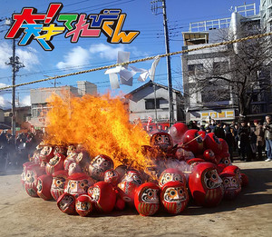
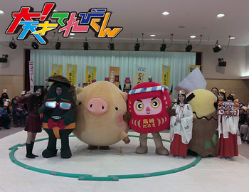
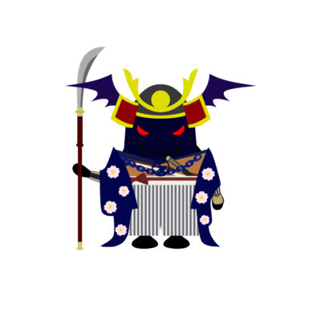
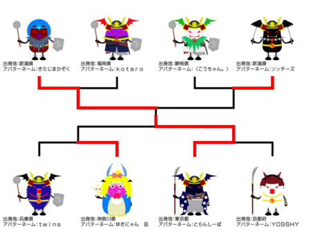
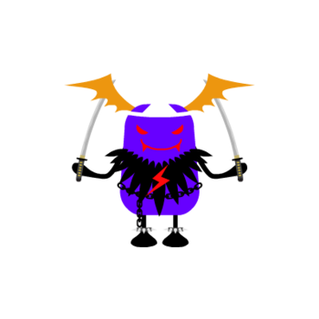

大！木曜LIVE
2014年02月27日 (木)最強アバターを決める「アバタイセン」〜第10戦〜
地上最強のアバターを決める超大型企画「アバタイセン」。今回は第10戦。
大天才テレビジョン内部にあるコンピューターが自動対戦した結果、
全世界に存在する 全26804体 のアバターの頂点に立ったのは…
静岡県 キングロボたーちゃんさん
おめでとう！
ベスト８の対戦結果はこちらです（左クリックで拡大します）。

アバターの強さは、『パーツ』や『色』の組み合わせで変わります！
番組HPにあるトレーニングセンターで自分のアバターと、てれび戦士や出川特命Pの
アバターと対決させて、最強アバターになる組み合わせを見つけてほしい！
アバターの制作はこちらから！
投稿者:大天才テレビジョン社員３号 | 投稿時間:20時00分 | 固定リンク


 " title="ソーシャルブックマークについて">
" title="ソーシャルブックマークについて">
※NHKサイトを離れます。
2014年01月23日 (木)【大！木曜ＬＩＶＥ】スーパーご当地キャラ大戦
今日の大！木曜ＬＩＶＥは、「スーパーご当地キャラ大戦」
ふなっしー軍団ｖｓでがっしー軍団で３番勝負を行いました！
ふなっしー軍団は、
去年大ブレイクした梨の妖精“ふなっしー”を筆頭に、
４５歳の中年しゃべくりキャラ“ちっちゃいおっさん”（兵庫県尼崎市）
顔で「岡」、身体で「崎」を表現した“オカザえもん”（愛知県岡崎市）
身長３ｍ５５ｃｍ、自称・ゆるキャラ界最大“お城ロボ”（岐阜県）
世界で人気、ＮＨＫの顔“どーもくん”
以上、５名が参戦！
一方、でがっしー軍団は、
ふなっしーに対抗意識を燃やしている４９歳、“でがっしー”（出川特命Ｐ）
人気者に対抗心を燃やし、本気モードでどーもくんに勝利した“チャン錦ちゃん”
ふなっしーが発表したあるある川柳のおかげで、見事新ワザを決めた“あるあるレッド”
普段のおばさんキャラと変わらない“ちっちゃいおばはん”（美晴）
卓球で鍛えた体で、オカザえもんを相撲で倒した“シマダえもん”（島田）
イス取りゲームで、ふなっしーに押しつぶされた“延命ロボ”（延命）
あるあるレッドの身体能力を身につけたい“のだのだグリーン”（野田）
シャイ番長で鍛えた精神力で、見事ＰＫを決めた“かねかねブルー”（金子）
以上、８名で対戦！
結果は、１６対０で、見事でがっしー軍団が圧勝！
放送後、お互いの健闘をたたえあい、記念写真（パチリ）

データ投票にご参加してくださったみなさん、ありがとうございました！
投稿者:大天才テレビジョン社員３号 | 投稿時間:19時57分 | 固定リンク
" title="ソーシャルブックマークについて">
※NHKサイトを離れます。
2014年01月09日 (木)【チャンカワイの大！相撲中継】群馬県前橋場所
1月9日新年1回目の「チャンカワイの大！相撲中継」は群馬県前橋市から。
前橋市はこの日、年に１回の「初市」というお祭りの真っ最中でした！
午前中には、だるまの「お焚き上げ」も行われていました。
火の勢いにびっくり！

そんな中、地元のキャラクターたち、ころとん・たか丸くん・もじゃろーが集結！
全員が真剣に優勝を目指し、現場はピリピリとしたムードが漂いました。
結果は…チャン錦ちゃんの優勝！
チャン錦ちゃん、最近、向かうところ敵なしです！

寒い中、勝負を見守りにきていただいた皆さんも
本当にありがとうございました！
投稿者:大天才テレビジョン社員３号 | 投稿時間:21時00分 | 固定リンク
" title="ソーシャルブックマークについて">
※NHKサイトを離れます。
2014年01月09日 (木)最強アバターを決める「アバタイセン」〜第9戦〜
地上最強のアバターを決める超大型企画「アバタイセン」。今回は第8戦。
大天才テレビジョン内部にあるコンピューターが自動対戦した結果、
全世界に存在する 全26090体 のアバターの頂点に立ったのは…
東京都 とらんしーばさん

おめでとう！
ベスト８の対戦結果はこちらです（左クリックで拡大します）。

アバターの強さは、『パーツ』や『色』の組み合わせで変わります！
番組HPにあるトレーニングセンターで自分のアバターと、てれび戦士や出川特命Pの
アバターと対決させて、最強アバターになる組み合わせを見つけてほしい！
君も最強のアバターを作って対戦の時を待て！
アバターの制作はこちらから！
投稿者:大天才テレビジョン社員３号 | 投稿時間:19時00分 | 固定リンク
" title="ソーシャルブックマークについて">
※NHKサイトを離れます。
2013年11月28日 (木)最強アバターを決める「アバタイセン」〜第8戦〜
地上最強のアバターを決める超大型企画「アバタイセン」。今回は第8戦。
大天才テレビジョン内部にあるコンピューターが自動対戦した結果、
全世界に存在する 全24821体 のアバターの頂点に立ったのは…
神奈川県 たかぴさん

おめでとう！
ベスト８の対戦結果はこちらです（左クリックで拡大します）。
アバターの強さは、『パーツ』や『色』の組み合わせで変わります！
番組HPにあるトレーニングセンターで自分のアバターと、てれび戦士や出川特命Pの
アバターと対決させて、最強アバターになる組み合わせを見つけてほしい！
君も最強のアバターを作って対戦の時を待て！
アバターの制作はこちらから！
投稿者:大天才テレビジョン社員３号 | 投稿時間:19時00分 | 固定リンク
" title="ソーシャルブックマークについて">
※NHKサイトを離れます。
2013年10月25日 (金)【チャンカワイの大！相撲中継】三重県名張場所
ＮＡＢＡＲＩ！
１０月２５日の「チャンカワイの大！相撲中継」は三重県名張市から。
名張市はチャン錦ちゃんの“中の人”チャンカワイさんの地元でしたが、結果は…
１回戦は四日市市のこにゅうどうくんに勝ったものの、
決勝では鈴鹿市からやってきたお茶の木界の異端児、「すずか茶ん」に
惜しくも敗戦。故郷に錦を中途半端に飾る結果になってしまいました。

これは三重県名張場所、終了後の一幕。
キャラクターたち勢揃い。
投稿者:大天才テレビジョン社員３号 | 投稿時間:18時00分 | 固定リンク
" title="ソーシャルブックマークについて">
※NHKサイトを離れます。
2013年10月24日 (木)最強アバターを決める「アバタイセン」〜第7戦〜
地上最強のアバターを決める超大型企画「アバタイセン」。今回は第7戦。
大天才テレビジョン内部にあるコンピューターが自動対戦した結果、
全世界に存在する全23839体のアバターの頂点に立ったのは…
岩手県 たっくんさん

おめでとう！
ベスト８の対戦結果はこちらです（左クリックで拡大します）。

アバターの強さは、『パーツ』や『色』の組み合わせで変わります！
番組HPにあるトレーニングセンターで自分のアバターと、てれび戦士や出川特命Pの
アバターと対決させて、最強アバターになる組み合わせを見つけてほしい！
君も最強のアバターを作って対戦の時を待て！
アバターの制作はこちらから！
投稿者:大天才テレビジョン社員１号 | 投稿時間:19時00分 | 固定リンク
" title="ソーシャルブックマークについて">
※NHKサイトを離れます。
2013年10月10日 (木)最強アバターを決める「アバタイセン」〜第6戦〜
地上最強のアバターを決める超大型企画「アバタイセン」。今回は第6戦。
大天才テレビジョン内部にあるコンピューターが自動対戦した結果、
全世界に存在する全23307体のアバターの頂点に立ったのは…
島根県 おえらいさんさん
おめでとう！
ベスト８の対戦結果はこちらです（左クリックで拡大します）。
アバターの強さは、『パーツ』や『色』の組み合わせで変わります！
番組HPにあるトレーニングセンターで自分のアバターと、てれび戦士や出川特命Pの
アバターと対決させて、最強アバターになる組み合わせを見つけてほしい！
君も最強のアバターを作って対戦の時を待て！
アバターの制作はこちらから！
投稿者:大天才テレビジョン社員１号 | 投稿時間:18時54分 | 固定リンク
" title="ソーシャルブックマークについて">
※NHKサイトを離れます。
2013年09月19日 (木)最強アバターを決める「アバタイセン」〜第5戦〜
地上最強のアバターを決める超大型企画「アバタイセン」。今回は第5戦。
大天才テレビジョン内部にあるコンピューターが自動対戦した結果、
全世界に存在する全22888体のアバターの頂点に立ったのは…
埼玉県 りおこニャンさん

おめでとう！
ベスト８の対戦結果はこちらです（左クリックで拡大します）。

アバターの強さは、『パーツ』や『色』の組み合わせで変わります！
番組HPにあるトレーニングセンターで自分のアバターと、てれび戦士や出川特命Pの
アバターと対決させて、最強アバターになる組み合わせを見つけてほしい！
君も最強のアバターを作って対戦の時を待て！
アバターの制作はこちらから！
投稿者:大天才テレビジョン社員１号 | 投稿時間:20時10分 | 固定リンク
" title="ソーシャルブックマークについて">
※NHKサイトを離れます。
2013年07月12日 (金)最強アバターを決める「アバタイセン」〜第4戦〜
地上最強のアバターを決める超大型企画「アバタイセン」。今回は第4戦。
大天才テレビジョン内部にあるコンピューターが自動対戦した結果、
全世界に存在する全21398体のアバターの頂点に立ったのは…

宮崎県 カチコチさん
おめでとう！
ベスト８の対戦結果はこちらです（左クリックで拡大します）。

アバターの強さは、『パーツ』や『色』の組み合わせで変わります！
番組HPにあるトレーニングセンターで自分のアバターと、てれび戦士や出川特命Pの
アバターと対決させて、最強アバターになる組み合わせを見つけてほしい！
君も最強のアバターを作って対戦の時を待て！
アバターの制作はこちらから！
投稿者:大天才テレビジョン社員１号 | 投稿時間:13時15分 | 固定リンク
" title="ソーシャルブックマークについて">
※NHKサイトを離れます。
ページの一番上へ▲


{kind=link}
{kind=link}
{kind=link}
{kind=link}
{kind=link}